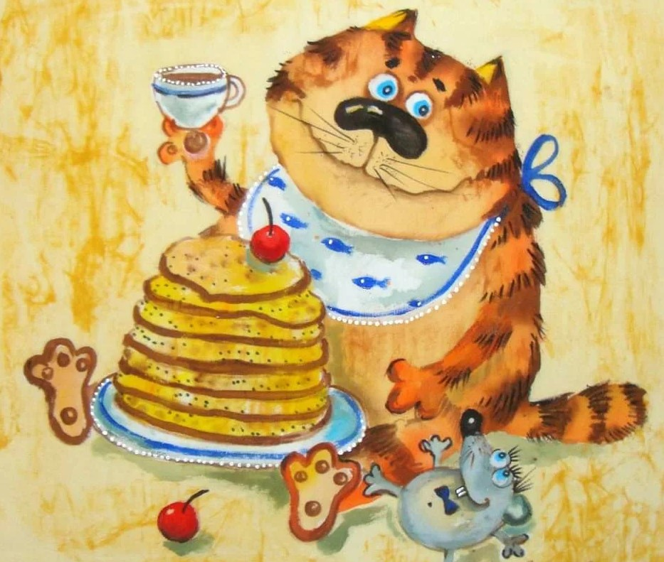

10 лучших запеканок

1 - Запеканка с фаршем и гречкой
Ингредиенты:
- 700 г куриного фарша
- 2 крупные луковицы
- 2 морковки
- 250 г гречки
- 2 яблока
- 120 г сыра
Приготовление:
- В смеси растительного и сливочного масел обжарила до мягкости луковицы, порезав кубиком и тёртые на крупной тёрке морковки — охладила
- Смешала с куриным фаршем, хорошо приправила, вымесила до однородности и выложила слоем в форму
- Отварила гречку, охладила, добавила очищенные и потёртые на крупной тёрке яблоки и тёртый на крупной тёрке полутвердый сыр, помешала хорошо и выложила вторым слоем в форму, слегка приминая
- Запекала в духовке 200 градусов 25 минут, достала, присыпала ещё немного тёртым сыром и вернула в духовку на 5 минут
2 - Картофельная запеканка с фаршем
Ингредиенты:
- 5-6 картофелин
- 500 грамм фарша
- луковица
- 3 яйца
- немного сыра
- свежая зелень
Приготовление:
- Картофель вымыть, почистить и сварить до готовности. Сделать хорошее пюре, добавив в картошечку сливочное масло, немного молока и одно сырое яйцо
- Лук нарезать помельче, обжарить. Добавить к луку фарш и хорошо обжарить, практически до готовности
- В форму для выпечки выложить ½ часть картофельного пюре, разровнять. На картофельное пюре выложить фарш. Поверх фарша вторую часть картофельного пюре. 2 яйца взбить ( можно добавить немного сливок) и вылить на картофель. Посыпать тертым сыром и зеленью
- Запекать минут 20 при температуре 200 градусов
3 - Картофельная запеканка с копчёным окороком
Ингредиенты:
- 250-350 гр. копчённого окорока
- 1 кг. картофеля
- 20 гр. сливочного масла
- 2-3 зубчика чеснока
- соль
- перец
- 400 мл. сливок
- 150-200 гр. тёртого сыра
Приготовление:
- Копчёный окорок нарезать кубиками, чеснок мелко порубить, картофель нарезать тонкими ломтиками (чем тоньше тем лучше)
- Форму для запекания с высокими бортами смазать сливочным маслом и посыпать частью чеснока. Картофель перемешать с окороком, солью, перцем,оставшимся чесноком
- Полученной "массой" заполнить форму для запекания, полить сверху сливками, посыпать сыром
- Запекать при 200 С около 45-55 минут, выключить духовку и оставить запеканку ещё на 5-10 минут
4 - Запеканка из полуфабрикатов
Ингредиенты:
- мясной фарш
- пакет любой овощной заморозки
- сметана или майонез
- сыр
- соль
- специи
Приготовление:
- На дно формы выложить фарш предварительно его посолить-поперчить
- На него всю заморозку из пакета
- Залить все сметаной или майонезом и сверху засыпать тертым сыром
- Если есть время, можно обжарить фарш с луком, так вкуснее. 5. Выпекать в духовке при t 200°С до зарумянивания сыра
5 - Нежнейшая мясная запеканка на сливках
Ингредиенты:
- 500-600 г мясного фарша
- 2 сырых куриных яйца
- 2 стол. ложки 10%-ных сливок
- 2-3 стол. ложки отрубей (вместо отрубей, взяла геркулесные хлопья, перемолоченные в кофемолке)
- соль
- зелень и специи - вкусу
Приготовление:
- Готовый фарш солим, добавляем специи и зелень (по желанию). Отдельно взбиваем яйца со сливками (немного солим) и добавляем яично-молочную смесь в фарш
- Хорошенько взбиваем вилкой или миксером до однообразной мясной массы. Выкладываем в хорошо смазанную топленым масло и посыпанную сухарями форму
- Запекаем в духовке при температуре 200-250 градусов до готовности (около 20 минут)
- Степень готовности я определяю по ароматному мясному запаху. Удачнее всего запеканка сочетается с квашеной капустой или же любыми овощными салатами
6 - Запеканка по-неаполитански
Ингредиенты:
- 500 г пасты пенне (перьев)
- 700 г мясного фарша
- 1 крупная луковица
- 1 красный сладкий перец
- 2 ст.л. томатной пасты
- 150 г твердого сыра
- небольшой пучок петрушки
- 400 мл молока
- 2 ст.л. сливочного масла
- 2 ст.л. муки
- соль и перец по вкусу
Приготовление:
- Лук мелко режем и обжариваем в течение 3 минут на растительном масле
- Добавляем мелко нарезанный сладкий перец и жарим еще 2-3 минуты
- Добавляем фарш, солим, перчим и жарим 10 минут, постоянно помешивая
- Продолжаем жарить еще минуты 3, пока жидкость не выпарится. Добавляем мелко нарубленную петрушку и томатную пасту, перемешиваем и тушим 4 минуты
- Макароны отвариваем, сливаем воду, затем добавляем 0,5 ст.л. оливкового масла и перемешиваем
- Готовим соус. Для этого растапливаем в кастрюльке сливочное масло, добавляем муку и размешиваем до однородности. Постепенно, непрерывно помешивая, вливаем молоко и доводим смесь до кипения. Снимаем с огня
- Собираем запеканку. На дно формы (у меня 35*24 см) кладем половину макарон. Кладем половину бешамеля и равномерно распределяем. Далее кладем фарш, разравниваем. Накрываем оставшимися макаронами. Сверху равномерно распределяем оставшийся соус
- Посыпаем тертым сыром и запекаем в разогретой до 200 градусов духовке в течение 25 минут
7 - Творожная запеканка как в детском саду
Ингредиенты:
- 500 гр. творога
- 100 гр. сахара
- 100 гр. манки
- 50 гр. молока
- 50 гр. сливочного масла
- 2 яйца
Приготовление:
- Все ингредиенты смешать
- Масло должно быть мягким
- Оставить на 40 минут для набухания манки
- Выпекать в духовке 180-200 С до золотистой корочки
8 - Картофельная запеканка с тефтелями
Ингредиенты:
- 750 г картофеля
- 750 г моркови
- 1 луковица
- 2 зубчика чеснока
- 600 г фарша
- 1 стол. ложка горчицы
- 1 стол. ложка с верхом панировочных сухарей
- 1 чайн. ложка лимонной цедры
- 1 яйцо
- соль
- молотый черный перец
- 200 мл сливок
- 100 мл молока
- 1 яичный желток
- тертый мускатный орех
- зелень
Приготовление:
- Картофель нарезать кружочками, а морковь - брусочками. Выложить овощи в смазанную жиром форму
- Нагреть духовку до 200°
- Лук и чеснок очистить и мелко нарезать. Смешать с мясом, горчицей, панировочными сухарями, лимонной цедрой, яйцом, солью и перцем
- Из полученного фарша сделать небольшие шарики и выложить их в форму на овощи
- Взбить сливки с молоком и яичным желтком, приправить солью, перцем и мускатным орехом. Полить этой массой овощи, накрыть крышкой или алюминиевой фольгой и запекать в духовке 50 мин
- Петрушку вымыть, обсушить и украсить готовое блюдо
9 - Нежнейшая творожная запеканка без муки и без манки
Ингредиенты:
- творог - 250 грамм (жирность берите по вкусу)
- молоко или сливки - 100-150 мл (в зависимости от влажности творога)
- 2 яйца
- сахар - 2 ст.ложки или по вкусу ванилин (или иные ваши любимые пряности)
- сливочное масло для смазывания формы
Приготовление:
- Отделить белки от желтков. Взбить в емкости погружным блендером творог с молоком, сахаром, пряностями и желтками. Взбиваем до тех пор, пока "Не исчезнут" все крупинки творога. Масса получается как густая сметана
- Отдельно взбить белки до пиков. Аккуратно ввести белки в творожную массу. Можно, конечно не отделять белки от желтков, а все взбить вместе - тоже будет вкусно, но уже не так нежно. При этом варианте запеканка получается нежнейшая, прямо как суфле
- Выложить в смазанную маслом форму и выпекать в разогретой до 160-170 градусов духовке около 35 минут
- Полностью остудить и нарезать порционно
10 - Запеканка из кабачков с сыром
Ингредиенты:
- кабачка 3 средних (800г мякоти без кожуры и семечек)
- домашний сыр 200-250г (зерненый творог, жидкость слить)
- сыр твердый 50г
- 3 яйца
- 2 зубчика чеснока
- 1ст.л. растительного масла
Приготовление:
- Кабачки натереть на крупной терке, помять, хорошо отжать (от лишней жидкости)
- Зерненый творог смешать с сыром, натертым на крупной терке, хорошо посолить (солить из расчета на всю запеканку, так как кабачки не солим), добавить измельченный чеснок
- Взбить яйца и осторожно смешать с сырной смесью
- Противень смазать растительным маслом, выложить кабачки и залить яично-сырной смесью, немного перемешать
- Запекать в духовке при температуре 250 градусов 30-40 минут